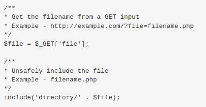
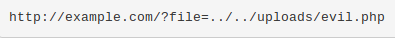
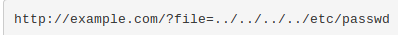

An attacker can use Local File Inclusion (LFI) to trick the web application into exposing or running files on the web server. An LFI attack may lead to information disclosure, remote code execution, or even Cross-site Scripting (XSS). Typically, LFI occurs when an application uses the path to a file as input. If the application treats this input as trusted, a local file may be used in the include statement. W Local File Inclusion is very similar to Remote File Inclusion (RFI). However, an attacker using LFI may only include local files (not remote files like in the case of RFI). The following is an example of PHP code that is vulnerable to LFI.
In the above example, an attacker could make the following request. It tricks the application into executing a PHP script such as a web shell that the attacker managed to upload to the web server.
In this example, the file uploaded by the attacker will be included and executed by the user that runs the web application. That would allow an attacker to run any server-side malicious code that they want. This is a worst-case scenario. An attacker does not always have the ability to upload a malicious file to the application. Even if they did, there is no guarantee that the application will save the file on the same server where the LFI vulnerability exists. Even then, the attacker would still need to know the disk path to the uploaded file.
Even without the ability to upload and execute code, a Local File Inclusion vulnerability can be dangerous. An attacker can still perform a Directory Traversal / Path Traversal attack using an LFI vulnerability as follows.
In the above example, an attacker can get the contents of the /etc/passwd file that contains a list of users on the server. Similarly, an attacker may leverage the Directory Traversal vulnerability to access log files (for example, Apache access.log or error.log), source code, and other sensitive information. This information may then be used to advance an attack.
The difference between (RFI) and Local File Inclusion (LFI)is that with RFI, the hacker uses a remote file while LFI uses local files (i.e. files on the target server) when carrying out the attack. To expand, in an RFI attack, a hacker employs a script to include a remotely hosted file on the webserver. In an LFI attack, a hacker uses local files to execute a malicious script. For LFI, it is possible for a hacker to only use a web browser to carry out the attack.
To an extent, you can minimize the risk of RFI attacks through proper input validation and sanitization. However, when you do, it is important to avoid the misconception that all user inputs can be completely sanitized. As a result, sanitization should only be considered a supplement to a dedicated security solution.
Having said that, it’s always preferable to sanitize user-supplied/controlled inputs to the best of your ability.
These inputs include:
In the process of sanitization, input fields should be checked against a whitelist (allowed character set) instead of a blacklist (disallowed malicious characters). Generally speaking, blacklist validation is considered a weak solution, as attackers can choose to supply input in a different format, such as encoded or hexadecimal formats. It’s also best practice for output validation mechanisms to be applied on the server end. Client-side validation functions, having the benefit of reducing processing overhead, are also vulnerable to attacks by proxy tools. Finally, you should consider restricting execution permission for the upload directories and maintain a whitelist of allowable file types (for example PDF, DOC, JPG, etc.), while also restricting uploaded file sizes.